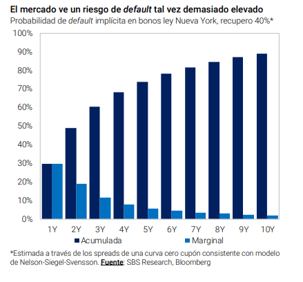

Aún con una carga de deuda baja en los próximos 4 años, el mercado nota riesgos de incumplimiento en los compromisos con acreedores. La probabilidad de default implícita en los bonos arranca en el 30% para el plazo de 1 año, alcanza el 60% a 3 años

Los riesgos de default
no se alejan de la deuda argentina,
incluso habiendo reestructurado hace menos de un mes. Con un valor de
recupero, la probabilidad de default a 10 años es del 90%
.
Dicha probabilidad está relacionada con la falta de un programa económico
consistente que se traducen en el deterioro del precio actual de los bonos. La renta ja local es una de las más riesgosos del planeta.
Desde que salieron a cotizarlos nuevos bonos,
la tendencia fue claramente bajista. Con un leve descanso en las últimas ruedas, los bonos aún
acumulan un retroceso del orden del 20%.
Esta caída hizo que las tasas de interés de los mismos pasen de 11% a 16% a la vez que la curva de
deuda muestre una clara pendiente negativa.
Cuando la pendiente de la curva se invierte y los rendimientos de corto plazo terminan siendo más elevados que los de largo plazo implica que
el mercado ve riesgos de algún evento crediticio en el corto plazo.
Por ello es que los bonos con vencimiento más inmediatos resultan más riesgos
y con mayortasa que los de más largo plazo. En este contexto,
la probabilidad de default sobre los bonos argentinos es elevada.
En un análisis elaborado por Adrián Yarde Buller, economista jefe de Grupo SBS remarca que
la probabilidad de que veamos algún evento
crediticio en los próximos 2 años es del 50%, 60% de probabilidad en 3 años y 70% en 4 años, es decir, antes de que termine el actual Gobierno.
A su vez, las chances de ver un default en los próximos 10 años es del 90%, es decir, casi asegurado.
“El mercado aún desconfía delsendero económico que eligió Argentina.
Los bonos descuentan una probabilidad de default de 60% a 3 años y 90% a 10 (recovery 40%). Se necesitará de otras señales”, advirtió. 